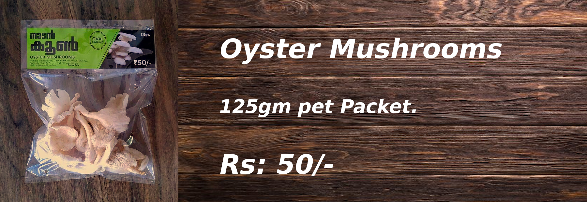

സാംക്രമിക രോഗങ്ങള് പെരുകിക്കൊണ്ടിരിക്കുന്ന ഈ കാലഘട്ടത്തില് പോഷകാഹാരത്തിന്റെയും അവ നല്കുുന്ന സ്വാഭാവിക രോഗപ്രധിരോധ ശേഷിയുടെയും പ്രാധാന്യത്തെക്കുറിച്ച് നാം കൂടുതല് ബോധവാന്മാരായിക്കോണ്ടിരിക്കുകയാണ്. ആരോഗ്യദായകമായ ഭക്ഷണക്രമങ്ങള് പാലിക്കുമ്പോള് സ്വാഭാവികമായും രുചിയുടെ കാര്യത്തില് വിട്ടുവീഴ്ച്ച ചെ്േണ്ർി വരുന്നു. രുചിക്ക് വേണ്ട് ആരോഗ്യത്തെയോ ആരോഗ്യത്തിന് വേണ്ടി രുചിയോ വിട്ടുവീഴ്ച്ച ചെയ്യാന് നമുക്ക് ബുദ്ധിമുട്ടാണുതാനും.
